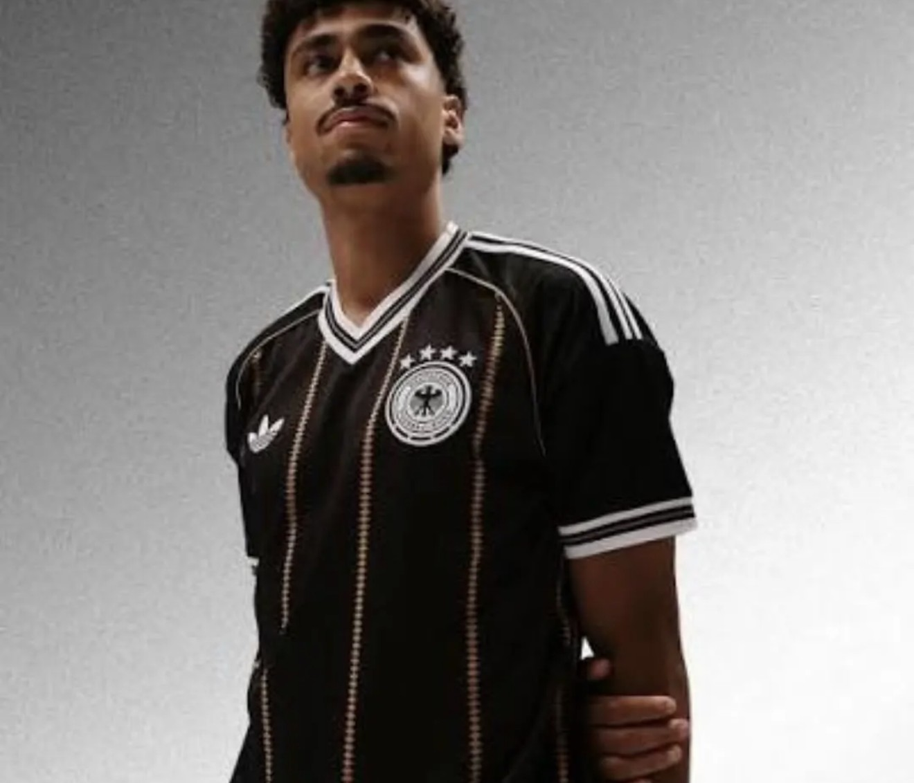

End of an era: Germany's last Adidas shirt
After 72 years, the partnership between Adidas and the German national team is ending. Its final shirt is black, gold and full of history.

Few kit deals in sport mean as much as this one. Adidas has dressed Germany's national football team since 1954, and that run officially ends on 31 December 2026. From 2027, Nike takes over as the team's supplier.
The shirtBlack, gold, and a goodbye note
To mark the end, Adidas released one last shirt in late September. It is mostly black, with thin gold pinstripes made of repeating diamonds, white and gold trim on the V-neck and cuffs, and the old Trefoil logo in white on the chest. Near the hem sits a woven tag that reads “Seit 1954 – Partner der deutschen Nationalmannschaft”, meaning “Partner of the German national team since 1954”.
It's sold in a single version at the usual replica price of about €100, rather than the separate fan and match versions most national teams offer.
Why it mattersFour World Cups in three stripes
Every one of Germany's four World Cup titles, in 1954, 1974, 1990 and 2014, was won in Adidas. That is why the switch to Nike landed as more than a business story in Germany: it's the end of a piece of football culture, and this shirt is the souvenir.